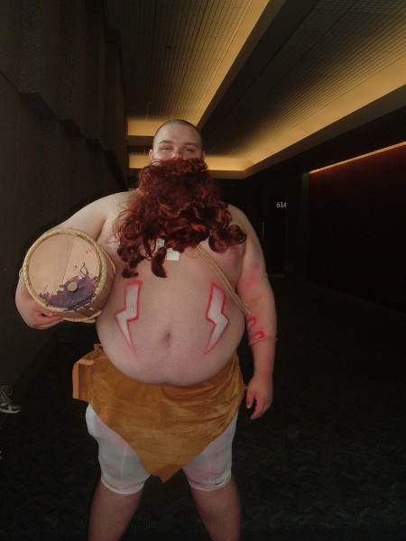
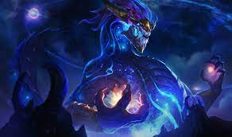

OS MEUS PERSONAGENS FAVORITOS
PS:Se quiser ver mais detalhadamente das historias dos personagens, clicke na imagen deles.
Neste site, vamos falar sobre os meus personagens favoritos, por varios sentidos, ou seja, nem sempre, o personagem é bom!
Vamos começar!
GRAGAS
Gragas, O baderneiro, é um bebado bem barrigudo, e bonito, ele ataca com a sua bebida alcoólica deixando os outros sem reação com tamanha pança e cachaça, ele é um alcolotra descontrolado que procura a bebida que vai deixar ele bebado para sempre, ele andou por uma grande parte da Runiterra para achar os ingredientes, até hoje ele não está satisfeito com a sua cachaça/pinga, enão continua procurando a mistura perfeita para o seu mé.
AURELION SOL
Ele é um dragão celestial,é esbelto e elegante, Aurelion Sol, é o Forjador de estrelas, Aurelion Sol criou o universo, ou sejá, ele é um dos mais poderosos personagens de todo o jogo(em questão de lor).Foi enganado pelos aspectros, sendo controlado como se fosse um animal de estimação, após um tempo ele se libertou do controle mental, e com toda a sua raiva, matou o aspectro da Guerra(no caso o seu ascendente), vendo que tinha um buraco do vazio tentando destruir tudo, ele simplesmente com um sopro, destruiu todo o buraco e uma grande parte do local, após isso, Aurelion Sol escutou uma risada de alguem desconhecido, vindo do buraco enquanto estava sendo destruido,Aurelion ficou com raiva ao pensar que estavam esnobando do seu poder, após isso, ele foi embora livre, porém com uma parte do poder selado, ao passar do tempo vai se libertando mais da sua prisão, e acaba cada vez ficando mais forte ao recuperar o seu poder.
ORNN

O Ornn é um cabrito/bode que é um semideus, ele é conhecido como "o semideus do fogo e da forja"contém um grande conhecimento sobre Forjar e criar estruturas, ele que criou a ponte do Howling Abyss, que até hoje está de pé, só sendo destruida lentamente por conta dos poderes do gelo verdadeiro(que é um gelo muito frio e forte em questões magicas), Ornn tambem criou a porta que o Braum usa(que é uma porta "indestrutivel").Ele contem mais 3 irmãos:Volibear, Irmã Foca, Anivia. (que são todos semideus muito fortes) Dos 3 Irmãos Ornn é o mais Forte e velho deles. Ele gosta de:Bolo, Cerveja escura, e Forjar.Ao todo ele é muito rabugente e peludo.
BRAUM

Braum, O pastor de Poros, Braum vive em Freljord, uma terra gelada, ele é um brutamonte de grade coragem e coração, muito das vezes passivo, mas ao irritá-lo Braum vai te descer a escudada, Braum tem uma mãe que gosta de ajudar os outros, e por ser filho dela, acabou erdando isso, em um certo dia ele parou uma briga de tribos apenas ajudado os feridos, ele contém uma porta fabricada por Ornn (o semideus do fogo e da forja) a conseguiu salvando um Goblin que estava preso dentro de uma caverna que tinha a porta como proteção, como a porta era indestrutivel, Braum acabou optando por quebrar a montanha que estava em volta dela, com o Goblin salvo decidiu ficar com a porta, para fins de proteção.Apesar de ser muito forte, não quer brigar, e sim descançar cuidando de poros.